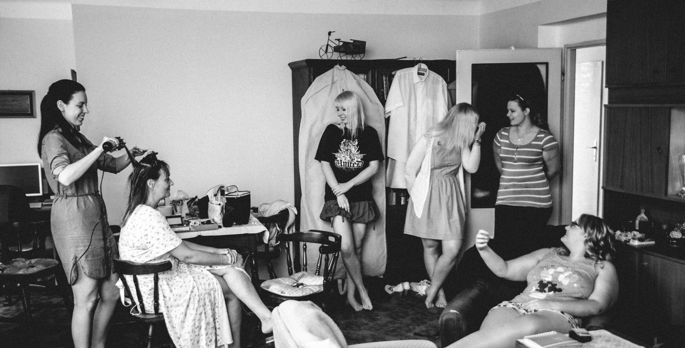
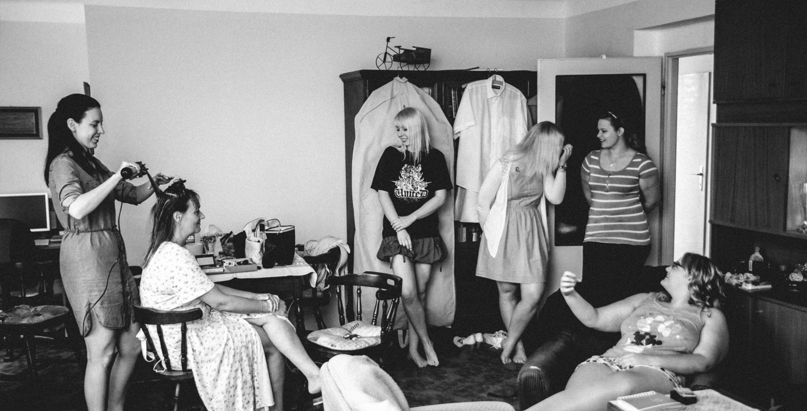
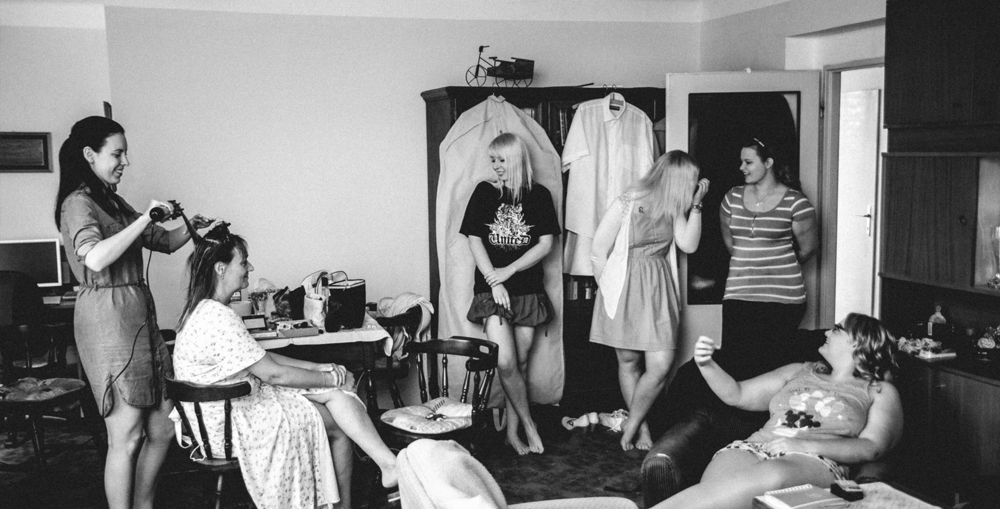
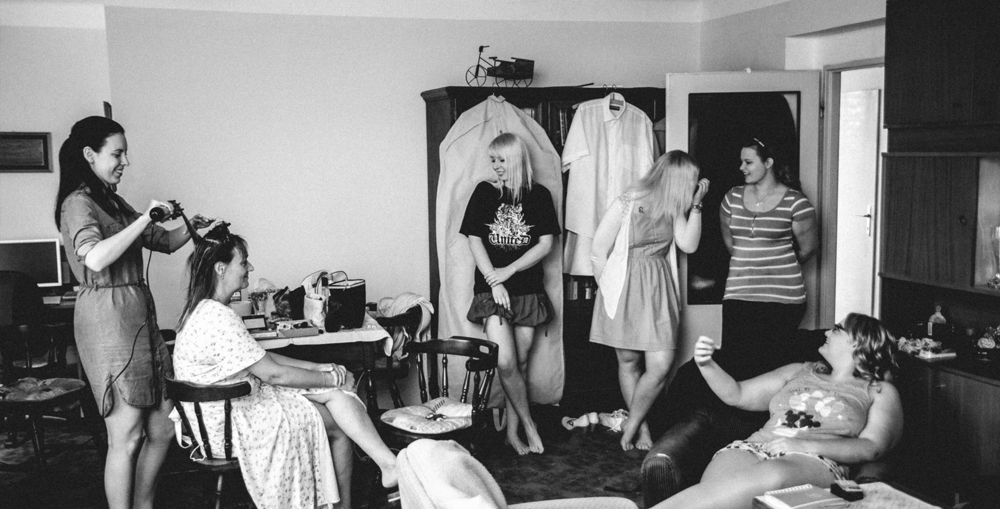

Dokumentární svatební fotografie
Zachytím Vaši svatbu prostě tak, jak se odehraje - se všemy krásnými emocemi nabitými momenty, ale i se všemy přešlapy, protože nikdo z nás není dokonalý. Snažím se o přirozenost ve fotografiích a vyhýbám se uměle komponovaným fotografiím. Snažím se na svatbě nebýt vidět, neupozorňovat na sebe a místo toho se plně soustředit na zachycení těch nejlepších svatebních momentů. Každá svatba je pro mne příběh a tak ji i zachycuji. Příběh Vašeho nejdůležitějšího dne, se všemy úspěchy i nedokonalostmi. Příběh plný lidské přirozenosti. Vytvářím přirozené fotografie plné opravdových emocí a skutečných momentů. Pokud chcete zachytit svoji svatbu upřímným a poctivým způsobem, mít fotografie které budou plné opravdických emocí a momentů, pak jste na moje stránky zavítali správně. Prohlídněte si moje porfolio, a když se Vám moje tvorma zalíbí, neváhejte mě kontaktovat.
PŘÍBĚH

OPRAVDOVÉ MOMENTY
DOKUMENTÁRNÍ STYL